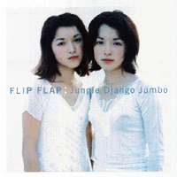
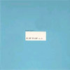
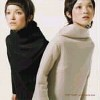

strange music page
japanese stange music * * * idol pops
#アイドルポップス、好きな人がプロデュースしてたり曲作ったりしてるやつ。
例えば戸田誠司とか鈴木さえ子とか山川恵津子とか。
最近のだとFLIP FLAPっす、最高。
ちなみに渡辺満里奈。
|
- 市井由里
- 内田有紀
- 早瀬優香子
- FLIP FLAP
- 篠原ともえ
- 宍戸留美
- QLAIR
|
#"ブックセンターイトウ"にて、3枚900円の中の一つです。鈴木祥子の一枚目とかと一緒に買いました。なんでこんなもん買ったかというと、菊地成孔の書いた曲が入ってたよーな気がしてたから。結果は....まぁ、半分くらいアタリでした。朝本浩文、ヒックスヴィル、ASA-CHANGなど、結構予想通りのメンツだったのでなんだか。
作詞が菊地成孔+ハラミドリな5,6曲目なんて、結構スパンクハッピーみたいで良かったです。バックのハラミドリのコーラスの方が気になっちゃうっつーのもちょっと問題アリかも知れないですが。もーちょい歌うまければ言う事ないんですけど、まぁ300円だし。
あ、11曲目はいきなりバグルスのラジオスターの悲劇がイントロで、一瞬ビックリしました。ウチのCDプレイヤーがラジオになったのかと思った。(2000.2.6)
- ピクニック・ラブ
- 恋がしたかった
- サイダービーチは柑橘系
- タイムマシン・ブレイカー
- さよならの秘密
- レインボー・スキップ
- そして甘いキッス
- 双子の恋人
- 素敵なベイビー
- 雲のように
- 優しいトーン
- 眠れない夜に
- 恋がしたかった (BOOM BAP 1200 REMIX)
- さよならの秘密 (WILD WEST DUB)
words by 菊地成孔 (1.4.5.6.8.)
words by かせきさいだあ (3.)
words by 小泉今日子 (2.11.)
music by ASA-CHANG (4.5.6.8.12.)
music by 小暮晋也 (3.9.10.)
music by 菊地成孔 (1.)
music by 朝本浩文 (2.4.11.)
arranged by HICKSVILLE (3.7.9.10.)
arranged by 朝本浩文 (1.2.4.11.)
arranged by ASA-CHANG (4.5.6.12.)
arranged by 河合代介 (8.)
- ASA-CHANG (percussions,drums,syn-drums on 1.4.5.6.12.)
- 菊地成孔 (saxes on 1.5.)
- 朝本浩文 (programming,samples,keyboards on 1.2.4.6.11.)
- ハラミドリ (backing vocals on 1.6.)
- 小暮晋也 (guitars,backing vocals on 3.7.9.10.)
- 中森泰弘 (guitars,backing vocals on 3.7.9.10.)
- 真城めぐみ (backing vocals on 3.7.9.)
- 中山努 (organ,piano on 3.7.9.)
- 河合マイケル (drums,percussions on 3..9.10.)
- 浦山秀彦 (guitars on 5.6.)
- MECKEN (bass on 4.)
- Jake H.Conception (tenor sax,flute,bass clarinet on 2.)
- COMO-LEE (talk box on 6.12.)
- 渡辺等 (wood bass on 12.)
- 水谷公生 (guitars on 2.11.)
- 吉田智 (programming,synthesizers on 5.12.)
- 岡沢茂 (bass on 11.)
- 村田陽一 (trombone on 9.)
- 荒木敏彦 (trumpet,flugelhorn on 9.)
- 山本拓夫 (tenor sax on 9.)
- 鹿島達也 (bass on 3.7.9.10.)
- 数原晋 (trumpet,flugelhorn,trombone on 2.)
- 三沢またろう (percussions on 2.)
EPIC/SONY RECORDS: ESCB-1780 (1996.8.21)
#えーと早瀬優香子さんの3枚目。私は良く知らないんですけど、アイドルポップ好きな人には結構人気の有る方らしいです。
んで、この3枚目はプロデュースが(当時)Shi-Shonenの戸田誠司さん、バックのメンバーは
shi-shonen/2001年の恋人達みたいな感じです。80年代らしいちょっとテクノ入ったアイドルポップス、ちょっとアンニュイな感じのボーカルもマッチしててなかなかです。
ヤフーオークションでゲットしました。
- Island
- 裸足のボレロ
- 島での出来事
- グランド・マザー
- ロールシャッハ・ロールシャッハ
- 夕方前にはお部屋にいること
- 唇の不一致
- BLANC
- 椿姫の夏 (Polyester Version)
- ポリエステルと夜
- 椿姫と夏 (Single Version)
sound produced by 戸田誠司
composed by 戸田誠司 (1.5.8.)
composed by 矢野誠 (3.6.)
composed by 細野晴臣 (9.11.)
composed by 小森由美 (2.7.)
composed by 千石花土根 (10.)
- 早瀬優香子 (vocals,percussions)
- 戸田誠司 (computer,voice)
- 福原まり (piano,keyboards)
- Ishitsubo Shinya (drums)
- 寺谷誠一 (drums)
- Niizato Leon (drums)
- 柴山和弘 (guitars)
- 塚田嗣人 (guitars)
- Sugawara Hiroki (percussions)
- Pecker (percussions)
- 矢口博康 (sax)
- Komuro Kazuyuki (backing vocals)
- Mukai Hiroshi (backing vocals)
- Derek Jackson (backing vocals)
NIPPON PHONOGRAM/SIXTY RECORDS: 32SD-11 (1987)
#キングレコードはたまーに暴挙に出るみたいですね。1曲目から順番に清水靖晃,戸田誠司,CHAR,Chara,コモエスタ八重樫,福原まり,LA-PPISCH,(一人知らない),大沢よしゆき,塩谷哲...スゲー面子です。
個人的なお目当ては福原まりさんの作曲の6曲目、いかにも福原まりさんらしい、3拍子のくるくる落っこちていくような曲です。福原まりさんの楽曲提供なお仕事の中でもかなり気に入っている曲です、今堀恒雄さんのギターも良いですし。
でも全然期待してなかったんですけど、こーして聴く分には内田有紀さん意外と歌イイです、結構器用な人なのかも。
- 追いかけてくる月
- BE MY BOY
- Baby's Universe
- もぉいや
- シークレットダイヤルを廻せ
- 非常階段で踊る
- ロバのサーカス
- 地球が泣いている
- 背中は見せない
- 銀のペンダント
KING RECORDS: KICS-540 (1996.3.23)
#内田有紀、もう一発。このアルバムは戸田誠司と福原まりが沢山曲を書いてます.....たぶんディレクターの人とか、
Shi-Shonenとか好きだったんじゃないかと推測されますが。
演奏者のクレジット無いので詳しくは分からないんですけど、ストリングス系は
斎藤ネコさんじゃないかと思います。きっとサックスは
矢口博康99%間違い無い。
あと、
清水一登さんアレンジの4曲目はかなりKILLING TIME風味です。
どこの中古屋さん行っても千円以下で売ってますけど、それにしてはソングライティング良すぎです。安く売ってたなら騙されたと思って買ってみましょう、きっと損はしないと思います。
ちなみに広瀬香美とコムロのボーナストラックは完全なる蛇足、アルバムの流れからは完全に別です。いらない。
- 鳥かごの中の僕
- 泣きたくなる
- 夢を見させて
- 流れ星
- キスをした
- 天の川
- プレゼント
- 信号
- 好きになれ
bonus track
- 幸せになりたい
- EVER & EVER
music,arranged by
福原まり (2.3.6.9.)
music,arranged by
戸田誠司 (1.)
arranged by
戸田誠司 (7.8.)
music by 財津和夫 (4.)
arranged by
清水一登 (4.)
KING RECORDS: KICS-600 (1996.10.10)
#衝動買いばっかだなー、近くの中古屋に\980で売ってるの知ってて、今日突然聴きたくなって歩いて買いに行きました。
なんか、CD全曲メドレーでサーチできなくなってます。そいで何度も最後まで聴いてるって事はきっとかなり気に入ってるって事だと思います。
ちなみにFLIP FLAPは双子のアイドルです。YUKOとAIKOらしいんですけど、Puffyの見分けもつかない私には全然判別できないです。ちなみに声も判別不能です、流石双子。
昔のアイドルみたいに結構ムチャやってて楽しいですよ、音的には最近のモノですけど。ま、やっぱ可愛いしなんか。(1999.9.18)

- FLIP FLAP #1
- Jungle Django Jumbo
- たんぽぽ
- どうして
- What's newてゆうか買ってよ
- ふたりの浜辺で
- とんたんとんたん
- Natural
- clip clap
- 私は強いの改めおなかがいたいの
- THE HUSTLE 手紙REMIX
- うちへ帰ろう
- FLIP FLAP #2
track 1.2.5.7.9.13.composed by Isogai Takeshi
track 10.11. remixed by Isogai Takeshi
track 3. composed by CMJK
track 4.6. composed by Kashiwara Nobuhiko
KI/OON SONY RECORDS: KSC2-216 (1998.4.22)

- バランス
- 旅行に行こう
- 小さな光
- あなただけ見ているの
- たんぽぽ〜flor amarela〜
all songs written, programmed, arranged and directed by CMJK
- YUKO
- AIKO
- 吉澤秀人 (guitars on 1.)
- Koike Hiroyuki strings (strings on 1.4.)
- THE RHYTHM KINGS (carnival percussions on 2.)
- 三沢またろう (carnival percussions on 2.)
- Mari (carnival percussions on 2.)
- Sakai Hideaki (carnival percussions on 2.)
- Pole Yanagida (carnival percussions on 2.)
- 真城めぐみ (backing vocals on 2.5.)
- Kakizaki Yo-ichiroh (talking modulator,analogue lead synthesizer on 3.)
- 鈴木祥子 (backing vocals on 3.)
- 今剛 (guitars on 4.)
- 富倉安生 (bass on 4.)
- 山本拓夫 (horns on 4.)
- 荒木敏男 (horns on 4.)
- Hirohara Masanori (horns on 4.)
- MELODY SEXTON (backing vocals on 4.)
- Furukawa Masayoshi (guitars on 5.)
KI/OON SONY RECORDS: KSC2-273 (1999.4.29)
#えーと
上のに較べると、ちょっとテンション下がっちゃったような気もします、前半は良いんですけど「夏休み」とかフツーの歌謡ポップスだし...
あ、でも最近のアイドルポップスの中ではかなり好きです。
CMJKのトラックが特に良いと思います「happenings」とかすげー良くて、2000年型テクノ歌謡っていうか...リズムの音がスゴイ気持ちいいです。「枕草子でおやすみ」は長尺のアンビエント、出来はそんなでも無いですけどアイドルのアルバムでアンビエントってのもスゴイっすね。あと「ふりふらマンボ」は9分くらいの無音の後にくっついてます原宿ふりふら堂って番組のテーマ。オマケですね、結構好きだけど。

- 春はあけぼの
- ハプニングス〜happenings
- everything!
- 旅行に行こう
- 夏は夜
- たんぽぽ
- Liv la la la Luv
- バランス
- 秋は夕暮れ
- 君のお世話をしたい
- 夏休み
- 私は強いの
- 冬はつとめて
- 小さな光
- 枕草子でおやすみ
- カントリーロードチルアウト
- ふりふらマンボ
music & arrangement by
樫原伸彦 (1.2.5.9.10.11.13.15.)
CMJK (3.4.6.7.8.14.)
坂井紀雄 (12.16.)
土井宏紀 (17.)
KI/OON SONY RECORDS: KSC2-316 (1999.11.3)
#90年代でこんなにアイドルポップスらしくて、質の高いCDを他に知らないです。
しかもコレ、弟からの借り物.....勉強させていただきます。さかなの9曲目(シングルになってたやつ)とか良いですねー。
- PURE ATOM BOY
- Shopping A→Z
- anything
- メトロの娘
- MICRO BLUE
- パレイド
- ハロー・スティーヴン
- LOVEBANG
- ココロノウサギ
- 会いに行くの。
- one peace
- MUSIC
track 1.2: ya-to-i
- 山本精一 (guitars on 1.2.)
- 岡田徹 (keyboards on 1.2.)
- 大串崇 (drums on 2.)
- あらきなおみ (bass on 2.)
track 6: Buffalo Daughter
- シュガー吉永 (guitars,keyboards)
- 大野由美子 (bass,mini moog)
- 山本ムーグ (turntable,voice)
- 小川千果 (drums)
- コスマス・カピッツァ (percussions)
track 9: さかな
- POCOPEN (guitars,chorus,sample noise)
- 西脇一弘 (gutiars,sample noise)
- 高橋健太郎 (programming,editing)
track 11: 少年ナイフ:
- 山野直子 (guitars,chorus,pianica,percussions)
- 山野敦子 (drums)
- しばたあつし (bass)
track 3.7.12: 長谷川智樹
track 4: 小西康陽
track 8: KANAME
track 10: 嶋紀之
KI/OON SONY RECORDS: KSC2-236 (1998.8.5)
- A Funny Feeling
- トーキョータワールドTV
- アリゲーター
- SPRINGTIME
- ラスト・ティーン
- 地下鉄に乗って
- 20回目のバースデイ・イヴ
- 20f
- 君んち。(Hello Harry Mix) -Bonus Track-
- 篠原ともえ
track 1: yo to i
- 山本精一 (guitars,loop)
- 岡田徹 (keyboards,programming)
- Ito Shunji (beats,programming)
track 2: Buffalo Daughter
- suGar (guitars,programming,voice)
- yumiko (bass,mini moog,voice)
- moOg (turntable,voice)
track 3: 少年ナイフ
- 山野直子 (guitars,keyboards,voclas)
- 山野敦子 (drums,keyboards)
- Shibata Atsushi (8string bass)
track 4: 五島良子
- Sawada Hiroshi (bass)
- Matsuzaki Yuichi (piano)
- Hiruko Hiruyoshi (guitars)
- Hanai Noboru (programming)
- 五島良子 (backing vocals)
track 5: チボマット
- 本田ゆか (sequencer,S3200,PMA5,505)
- Sean Lenon (voice)
- CHOOVE BABY (303,808)
track 6: 吉田拓郎
- 大橋伸行 (acoustic guitar,bass)
- Akutsu Ryuichi (electric guitar)
- Yamaoka Koji (programming,sampling)
- Mori Tatsuhiko (sampling,sound treatment)
track 7: JITTERIN' JINN
track 8: CHOOVE BABY
WARNER MUSIC JAPAN: HDCA-10002 (1999.3.25)
#タイトルで買いました。\600で買ったんですけど、Jellyfishと一緒に。これ持って中古屋さんウロウロしてる姿はいつにも増してヤバかったんじゃないかと思います。
80年代アイドル最後の勢いというか、もうほとんどヤケクソな曲調。すごいです、有る意味パンクかも。これを歌ってしまえる宍戸留美も恐いけど。これが存在し得た80年代ってスゴかったんだなーとか、スゴ。♪宇宙からの電波ーだって。
そして私は今日初めて自分の求めていたものに気付いたよーです。同士の方、メールください。
(ちょっとウソです)(1999.6.6)
- コズミック・ランデブー
〜地球の危機
- コンビニ天国
- 好き
- ロックの神様
- ピンクのラフレシア
- るみちゃんの危機
- 二人は映画みたいにいかないね
- Panic in my room
- 宇宙の危機
- 君はちっともさえないけど
- るみちゃんのお風邪
- 秘密よDIET
- ハートにリンス
- るみちゃんのおやすみ
- コンビニ天国 (カラオケ)
- るみちゃんの危機 (カラオケ)
composed by 福田裕彦
CBS/SONY RECORDS: CSCL-1557 (1990.10.12)
#えーと成田忍さんとか山川恵津子さんとか山口美央子さんとか。80年代アイドルポップの基本ていうか、完璧なアイドルポップス。コーラスとか綺麗でイイです。
けっこうこのグループも好きだったけど....今何してるんだろう？
- CITRON
- タヒチアンラブ
- 泣かないでエンジェル
- 思い出のアルバム
- パジャマでドライブ
- 一緒に見た風
- IN YOUR EYES
composed by:
成田忍 (1.7.)
Hirotani Junko (2.)
大沢誉志幸 (3.)
山口美央子 (4.6.)
鈴木祥子 (5.)
arranged by:
成田忍 (1.5.7.)
門倉聡 (2.3.)
山川恵津子 (4.6.)
佐橋佳幸,西平彰 (5.)
- 井ノ部裕子
- 今井佐知子
- 吉田亜紀
- 成田忍 (guitars on 1.5.7.)
- 沖山優司 (bass on 1.)
- 美島豊明 (programming on 1.5.7.)
- 小倉博和 (guitars on 2.3.)
- 門倉聡 (keyboards on 2.3.)
- Kimoto Yasuo (programming on 2.3.)
- 松下誠 (guitars on 4.6.)
- 山川恵津子 (keyboards on 4.6.)
- 中西俊博strings (strings on 4.)
- 石川鉄男 (programming on 4.)
- 佐橋佳幸 (guitars on 5.)
- 美久月千晴 (bass on 5.)
- 西平彰 (keyboards on 5.)
- JOE Group (strings on 6.)
- Negishi Takayuki (programming on 6.)
KI/OON SONY RECORDS: SRC2-6 (1992.6.21)